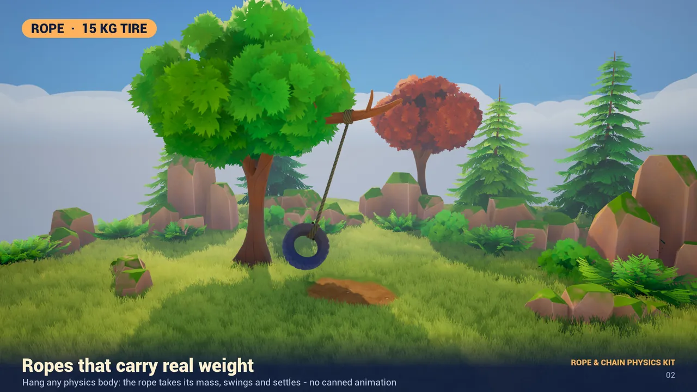
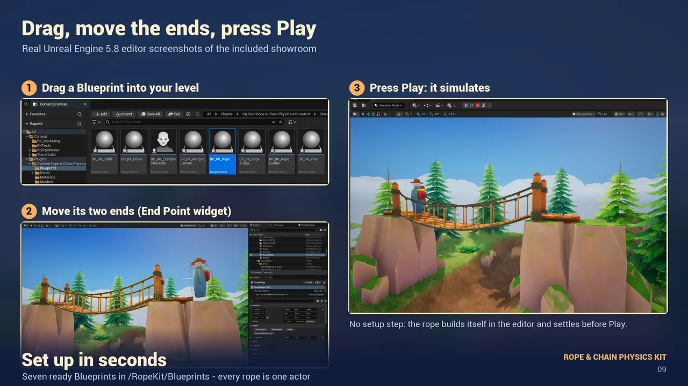
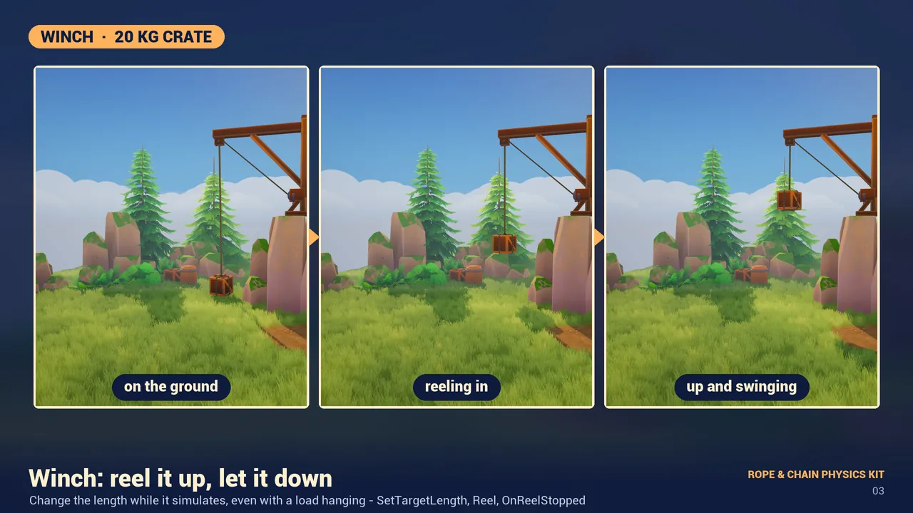
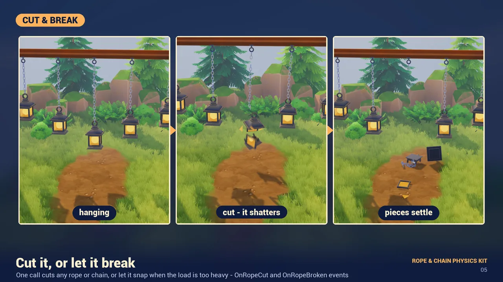
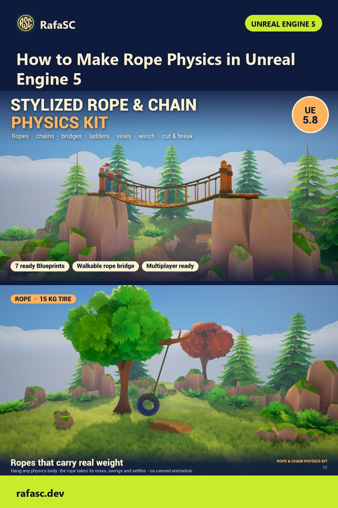

Rope physics
How to make rope physics in Unreal Engine 5
Rope physics in Unreal Engine 5 can be done three ways: the Cable Component that ships with the engine (great for hanging wires, mostly visual), a chain of small physics bodies joined by Physics Constraints, or a dedicated rope solver. Ropes that must carry real weight, be cut, reeled in by a winch or climbed by a character need the last one.
By RafaSC, 3D and technical artist · Updated · 6 min read

Three ways to make a rope
| Option | How it works | Good for | Watch out for |
|---|---|---|---|
| Cable Component (built in) | A line of particles simulated every frame and drawn as a tube | Hanging wires, power lines, decoration | It does not carry the weight of a physics object hanging from it |
| Physics Constraint chain | Small physics bodies (capsules or links) joined by Physics Constraints, simulated by Chaos | Short chains with a few links | Long or heavily loaded chains can stretch and jitter; every link is a body to simulate |
| Rope solver | One component that simulates all the points of the rope itself and talks to Chaos at the ends | Ropes that hold weight, bridges, winches, gameplay | You write it or buy it |
The first two rows are general Unreal Engine knowledge, not measurements of mine. My own kit uses the third option; its demo map has a room that compares it side by side.
What a game rope needs to feel real
This is the checklist I worked through for my own rope kit. If you build your own, it is a good order to test things in.
- Real weight, both ways. A crate on the end should pull the rope down, and the rope should hold the crate. A rolling ball should push the rope, and the rope should push back.
- No rubber. A rope that stretches 30 % when you yank it looks broken. You want a soft target stretch for normal use and a hard stretch limit for violent hits (in my kit: 8.2 % or less after a 25 m/s whip).
- Same result at any frame rate. If the rope behaves differently at 30 and 120 fps, players on different machines see different games. A fixed simulation step with sub-steps solves it.
- Sleep. A rope that is not moving should cost almost nothing and wake up when something touches it.
- Events. Gameplay needs to know when a rope is cut or breaks under load.
- Characters. Swing, climb, hang and walk across, without the character jittering.
- Multiplayer. Sending the full shape of every rope over the network is expensive. Sending the events (cut, break, winch length) and letting each machine simulate is cheaper.

Build it yourself: the outline
This is the idea, not a line-by-line tutorial. Position-based solvers (PBD / XPBD) are the usual starting point for ropes.
- Store the rope as a list of points with a mass each. Pin the first point (and the last one, if both ends are fixed).
- Every fixed step: move each point by its velocity and gravity, then pull neighbouring points back to their rest distance a few times (the iterations).
- Collide each point with the world after the distance pass, then rebuild the velocities from how far each point really moved.
- Run the step at a fixed rate (my kit uses 60 Hz with sub-steps) so frame rate does not change the result.
- Add a hard stretch limit for violent hits, then sleep for ropes that stop moving.
- Only then build the mesh: a tube along the points, or a mesh repeated along them for chains and planks.
The hard part is not the first rope. It is the 150 kg crate, the 25 m/s whip and the hundred ropes in one level.
The shortcut: drag, move the ends, press Play
With Stylized Rope & Chain Physics Kit the setup is five steps:
- Enable the plugin: Edit > Plugins > search "Rope Kit" > tick it, restart the editor.
- In the Content Browser open Plugins > RopeKit Content > Blueprints (enable Show Plugin Content in the view settings if you do not see it).
- Drag
BP_RK_Rope(or Chain, Cable, Vine, RopeLadder, HangingLantern, RopeBridge) into your level. - Drag the small diamond (End Point) to where the rope should end. The rope previews live in the viewport.
- Press Play.

| Blueprint | What it is | Typical use |
|---|---|---|
| BP_RK_Rope | Soft rope between two points | Fences, ropes, tied crates |
| BP_RK_Chain | Heavy chain with real-size links | Dungeon chains, anchors, gates |
| BP_RK_Cable | Tight cable with bending stiffness | Power lines, wires, hoses |
| BP_RK_Vine | Free hanging rope, grabbable, pushed by characters | Swinging vines, hanging ropes |
| BP_RK_RopeLadder | Two ropes and rungs, climbable | Ladders from ledges, ships, tree houses |
| BP_RK_HangingLantern | Chain with a weight at the end, can break by load | Lamps, signs, cages, pendulums |
| BP_RK_RopeBridge | Walkable bridge with planks, hand rails and posts | Canyons, jungle bridges |
The settings you will touch first
All of them are in the Details panel under Rope, and every variant is the same component with different defaults.
- Slack / Fixed Length: length = distance x Slack (1 = tight). Fixed Length overrides it.
- Num Segments: simulation resolution (10 to 40 for ropes).
- Attach End / End Attach Actor: turn End off for hanging ropes, or pick an actor for the end to follow. If that actor simulates physics, the rope really carries its weight (a Chaos constraint is created for you).
- Normal Stretch / Hard Stretch Limit: how much the rope may stretch in normal use, and the ceiling for violent hits.
- Cuttable / Break Load Kg: allow cutting, and let the rope break by itself above a load.
- Allow Sleep / Skip Render Offscreen: keep both on so still or hidden ropes cost almost nothing.

Winch, cut and break from Blueprint
- Winch:
SetTargetLength,Reel(negative = pull in),StopReeland the eventOnReelStopped. It works with a load hanging from the rope. - Cut:
CutAt, orCutClosestToLinefor a knife or a bullet. The eventOnRopeCutfires on a cut or a break;OnRopeBrokenfires when the load breaks it. - Push:
AddImpulseAtfor a kick,AddForceAllfor wind.

Limits and cost
- Tested on Unreal Engine 5.8 (Windows, DirectX 12). UE 5.5-5.7 are not in this release (a later update is planned); mobile is not tested.
- Rope-to-rope collision is not included. Ropes collide with the world and with physics bodies.
- 378 test runs (63 setups x normal and extreme load x 30, 60 and 120 fps): 0 explosions. Stretch under normal load 6.4 % or less; after a 25 m/s whip of the whole rope 8.2 % or less; at rest 0.4 % or less.
- Measured on a Ryzen 7 7800X3D + RTX 3080 (game thread): 10 awake ropes with collision 0.33 ms, 50 ropes 1.65 ms, 100 on screen 2.8 ms, 100 off screen 1.2 ms, 100 sleeping ropes 0.02 ms.
Next step: let your character swing on a rope, climb a ladder and cross a bridge.
Frequently asked questions
Can the Cable Component carry a physics object?
Not by itself. The Cable Component is a visual simulation: an object at its end does not hang from it. For a rope that holds weight you need physics bodies joined by constraints, or a rope solver coupled to Chaos at the ends.
Why does my rope look stretched under a heavy object?
Usually the object is much heavier than the rope. In Stylized Rope & Chain Physics Kit, use more Num Segments or a heavier rope Mass; the Hard Stretch Limit caps it (measured 8.2 % or less after a violent whip).
Does the rope behave the same at 30 and 120 fps?
In Stylized Rope & Chain Physics Kit, yes: it uses a fixed 60 Hz step with sub-steps, so the result is the same at 30, 60 or 120 fps (it slows down below 15 fps).
Which Unreal Engine version does the kit support?
UE 5.8 on Windows (DirectX 12). UE 5.5-5.7 are not included in this release; a later update is planned.
How expensive are physics ropes?
Measured on a Ryzen 7 7800X3D + RTX 3080 (game thread): 10 awake ropes with collision 0.33 ms, 50 ropes 1.65 ms, 100 on screen 2.8 ms, 100 off screen 1.2 ms, 100 sleeping ropes 0.02 ms.
Related guides

Save this guide for later. Product used on this page: Stylized Rope & Chain Physics Kit.